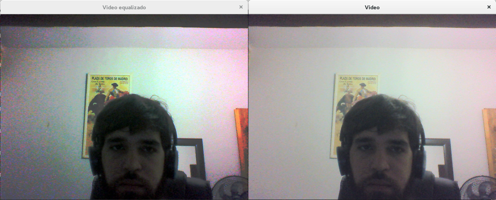

O propósito desta página é documentar meus avanços na disciplina de Processamento
Digital de Imagens no semestre letivo de 2016.1 em torno dos exercícios presentes no material disponibilizado
pelo Prof. Dr. Agostinho Brito do Departamento de Engenharia de Computação e Automação da Universidade Federal
do Rio Grande do Norte. Os algoritmos de solução serão escritos em C++ e a biblioteca OpenCV será exaustivamente
utilizada.
O formato PNG suporta representação de imagens de diversas formas, como em tons de cinza, coloridas e preto-e-branco. Imagens em outros
formatos tais como JPEG podem oferecer algumas limitações para os casos que serão abordados. Por exemplo, arquivos JPEG armazenam apenas
imagens em formato colorido e, durante o processo de gravação das imagens, o algoritmo de compressão com perdas pode modificar o conteúdo
da imagem original a ser gravada. Como a imagem que irei utilizar em alguns exemplos está em JPG, precisei convertê-la em PNG. Para isso,
utilizei o aplicativo mogrif como é mostrado abaixo:
mogrify -format png barba.jpg
A imagem pode ser vista abaixo :-)&
No primeiro exercício, preciso implementar um programa regions.cpp o qual deverá solicitar ao usuário as coordenadas de dois pontos P1
e P2 localizados dentro dos limites do tamanho da imagem. Estes pontos serão vértices opostos que darão origem a um retângulo, cujo
interior deverá ser o negativo da região correspondente na imagem original.
O código-fonte da solução segue abaixo:
#include <iostream>
#include <cv.h>
#include <highgui.h>
#include &stdlib.h>
using namespace cv;
using namespace std;
int main(int, char**){
Mat image;
cv::Size medida;
Vec3b val;
int p1a, p1b, p2a, p2b, altura, largura;
image= imread("barba_despenteada.png",CV_LOAD_IMAGE_COLOR);
medida = image.size();
altura = medida.height;
largura = medida.width;
cout << "Informe as coordenadas de P1:" << endl;
cin >> p1a;
cin >> p1b;
cout << "Informe a coordenada de P2:" << endl;
cin >> p2a;
cin >> p2b;
if (p1a > altura) {
p1a = altura;
}
if (p2a > altura) {
p2a = altura;
}
if (p1b > largura) {
p1b = largura;
}
if (p2b > largura) {
p2b = largura;
}
val[0] = 255; //B
val[1] = 255; //G
val[2] = 255; //R
for(int i=p1a;i < p2a;i++){
for(int j=p1b;j < p2b;j++){
image.at<Vec3b>(i,j)= val - image.at<Vec3b>(i,j);
}
}
imshow("janela", image);
waitKey();
return EXIT_SUCCESS;
}
Caso informássemos as coordenadas (250, 0) para o P1 e (300, 500) para o P2, teríamos a imagem abaixo sendo mostrada:
Para o segundo exercício é pedido que seja implementado um programa trocaregioes.cpp que deverá trocar regiões da imagem aleatoriamente, formando uma espécie de quebra-cabeças. Um dos problemas que encontrei é que dependendo do modo como você gera novas imagens ou copia pedaços dela você pode estar copiando partes da sua imagem já modifiada. Como era uma soft copy, ao passar o pedaço 2 da imagem 1 para o pedaço 1 da imagem 2, em ambas as imagens o pedaço 1 tinha agora o pedaço 2 e isso acarretava em uma imagem final com pedaços repetidos. A linha 23 me permite fazer uma hard copy resolvendo esse problema. O código-fonte da solução segue abaixo:
#include <iostream>
#include <cv.h>
#include <highgui.h>
#include &stdlib.h>
using namespace cv;
using namespace std;
using namespace cv;
int main(int argc, char const *argv[]) {
Mat image = imread("barba_despenteada.png", CV_LOAD_IMAGE_COLOR);
Mat image1, image2, image3, image4;
vector<Mat> images;
random_device rd;
mt19937 g(rd());
int largura = image.rows;
int altura = image.cols;
Mat final_image(0,0, altura, largura);
final_image = image.clone();
image1 = image(Rect(altura/2, largura/2, altura/2, largura/2));
images.push_back(image1);
image2 = image(Rect(altura/2, 0, altura/2, largura/2));
images.push_back(image2);
image3 = image(Rect(0, largura/2, altura/2, largura/2));
images.push_back(image3);
image4 = image(Rect(0, 0, altura/2, largura/2));
images.push_back(image4);
shuffle(begin(images), end(images), g);
for (int i=0; i<4; i++) {
if (i==3) {
images[3].copyTo(final_image(Rect(0, 0, altura/2, largura/2)));
} else if (i==0) {
images[0].copyTo(final_image(Rect(altura/2, largura/2, altura/2, largura/2)));
} else if (i==1) {
images[1].copyTo(final_image(Rect(altura/2, 0, altura/2, largura/2)));
} else if (i==2) {
images[2].copyTo(final_image(Rect(0, largura/2, altura/2, largura/2)));
}
}
imshow("image", final_image);
waitKey();
return EXIT_SUCCESS;
}
Duas imagens resultantes do algoritmo acima podem ser vistas abaixo:
No exercício três indaga-se sobre as limitações de algoritmos de contagem de
objetos. Em geral, um algoritmo de rotulação de imagens binárias recebe como entrada uma imagem binária e fornece
como saída uma imagem em tons de cinza, com as várias regiões representativas de objetos rotuladas com um tom de
cinza diferente. Fica claro que se a imagem possuir mais de 255 objetos, não teremos tons de cinza suficientes
para representar todos os objetos. Que solução pode ser dada para essa situação?
Como saída para esse entrave, podemos utilizar imagens de melhor resolução. 255 tons de cinza é uma limitação
para imagens em tons de cinza de 8 bits já que 2^8 nos da 256 valores, isto é, de 0 a 255. Se tivermos imagens
de 16 bits, por exemplo, poderemos ter até 2^16 tons, isto é, 65536 tons de cinza, o que não seria um problema
já que os computadores de hoje lidam com palavras de 16 bits sem problemas. A resolução em 8 bits é a mais comum,
já que um pixel é representado por um byte, mas não é incomum vermos 10, 12 ou até 16 bits em outras áreas como
a área médica.
O exercício 4...
O exercício 5 é voltado para o uso do OpenCV não mais com um fluxo estático, como uma imagem, mas com uma sequência de imagens, isto é, um vídeo que pode ser obtido pela sua webcam, por exemplo. Ele pede que equalizemos o que nossa webcam está gravando e façamos uma análise sobre os efeitos da equalização. Como em outros casos, o OpenCV já vem munido de algoritmos que facilitam boa parte das tarefas comuns que nos podem ocorrer no processamento digital de imagens. Neste caso, temos a função equalizeHist. O código-fonte segue abaixo:
#include "opencv2/opencv.hpp"
#include <iostream>
#include <stdlib.h>
using namespace std;
using namespace cv;
int main(int, char**){
VideoCapture cap(0);
if(!cap.isOpened())
return -1;
namedWindow("Imagem de vídeo", 1);
while(1) {
Mat frame;
vector<Mat> planes;
cap >> frame;
split (frame, planes);
Mat B,G,R;
//Equaliza as componeste separadamente
equalizeHist(planes[0], B);
equalizeHist(planes[1], G);
equalizeHist(planes[2], R);
vector<Mat> combined;
combined.push_back(B);
combined.push_back(G);
combined.push_back(R);
Mat result;
merge(combined,result);
imshow("Video equalizado", result);
imshow("Video", frame);
if(waitKey(30) >= 0) break;
}
return EXIT_SUCCESS;
}
É possível ver a diferença nas filmagens pelo printscreen abaixo:
No exercício seis